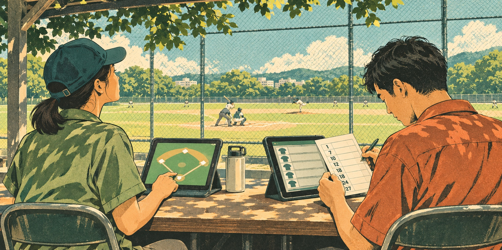

<!doctype html>
<html lang="zh-CN">
<meta charset="utf-8">
<title>分工协作记录 · 棒球比赛记录大师 iOS 和 Android</title>
<!-- Brand 1.5: product lockup and parent signature are linked to the approved artwork. -->
<style>
* { box-sizing: border-box; }
body { margin: 0; color: #f8f3e6; background: #092a2a; font-family: "PingFang SC", sans-serif; }
main { width: 1080px; height: 1440px; padding: 64px; overflow: hidden; position: relative; }
header { text-align: center; }
header img { display: inline-block; height: 80px; }
.intro { margin-top: 77px; }
.versions { display: flex; gap: 24px; align-items: center; font: 600 30px/1.4 Arial,sans-serif; color: #b4dbb6; }
.versions i { width: 1px; height: 25px; background: #749e88; }
h1 { font-size: 113px; letter-spacing: -5px; line-height: 1.18; font-weight: 650; margin: 12px 0 24px -4px; }
p { font-size: 41px; line-height: 1.55; margin: 0; font-weight: 450; }
p + p { margin-top: 4px; }
figure { margin: 52px 0 0; color: #143b34; background: #f4eddb; }
.scene { display: block; width: 100%; height: 476px; }
figcaption { display: grid; grid-template-columns: 1fr 1fr; }
.role { padding: 21px 22px 25px; border-top: 7px solid #50775b; }
.role + .role { border-top-color: #b75832; border-left: 1px solid #c9c3b1; }
h2 { font-size: 46px; line-height: 1.2; margin: 0 0 8px; font-weight: 650; }
.role + .role h2 { color: #874028; }
.role p { font-size: 29px; line-height: 1.45; }
footer { position: absolute; bottom: 64px; left: 64px; right: 64px; border-top: 1px solid #497269; padding-top: 27px; }
footer img { height: 32px; display: block; }
</style>
<main>
  <header></header>
  <section class="intro">
    <div class="versions"><span>iOS 3.1.4</span><i></i><span>Android 0.8.6</span></div>
    <h1>分工协作记录</h1>
    <p>一人管局面，一人管阵容，不会手忙脚乱</p>
    <p>临时增加队员，也可以好好研究对手</p>
  </section>
  <figure>
    <!-- scorers.jpg · Built-in ImageGen prompt
    Use case: ads-marketing. Create only the art insert for a Chinese baseball scorekeeping poster. Wide panoramic editorial sports illustration, landscape ratio 2:1. A calm summer afternoon at a community baseball diamond as viewed from behind the scorekeeper’s bench. Exactly TWO adult East Asian volunteer scorers in the foreground seated next to one another at the SAME long scorer’s table in the shade. The scorer at the LEFT quarter wears a deep teal baseball cap and a green short-sleeve overshirt, in three-quarter rear profile, face raised watching the pitch on the field, one hand inputting the pitch into their portable touchscreen, with a simple abstract baseball diamond on its screen. The scorer at the RIGHT three-quarters has short black hair, wears a terracotta overshirt, looks down and cross-checks a small printed lineup card with a row of jersey numbers against a different tablet showing a short roster. Both hands and devices naturally placed, both people at equal scale and importance. Strongly different gaze directions, clear silhouettes and tasks. One unified quiet landscape, baseball backstop, a few very tiny players in the distant sun, bright warm light on grass and on devices, grounded natural gestures. Refined Japanese sports magazine screen-print illustration, broad gestural ink shapes, subtle paper grain, restrained palette of pine green, sage, warm ivory and burnt orange. Hands, devices and both heads must fit comfortably in a central wide crop. Full bleed to all four edges. No headings, no words, no logos, no watermarks, no captions, no graphics outside the scene.
    -->
    
    <figcaption>
      <div class="role">
        <h2>局面记录员</h2>
        <p>逐球记录，跟进跑垒和得分</p>
      </div>
      <div class="role">
        <h2>阵容记录员</h2>
        <p>核对打序和守位，临时补员</p>
      </div>
    </figcaption>
  </figure>
  <footer></footer>
</main></html>
